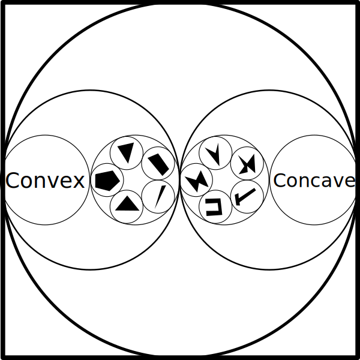

kakoi allows the grouping of alike things. A single interpretation of a piece of data may be placed in any number of—possibly overlapping—groups. Groups themselves are treated as pieces of information that can be placed in further groups.

By default, kakoi imposes no rules on what may be placed within a group. If several things appear to share a certain quality, group them!